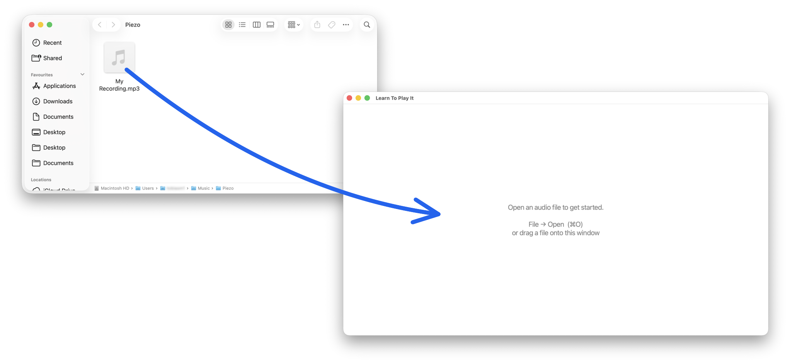
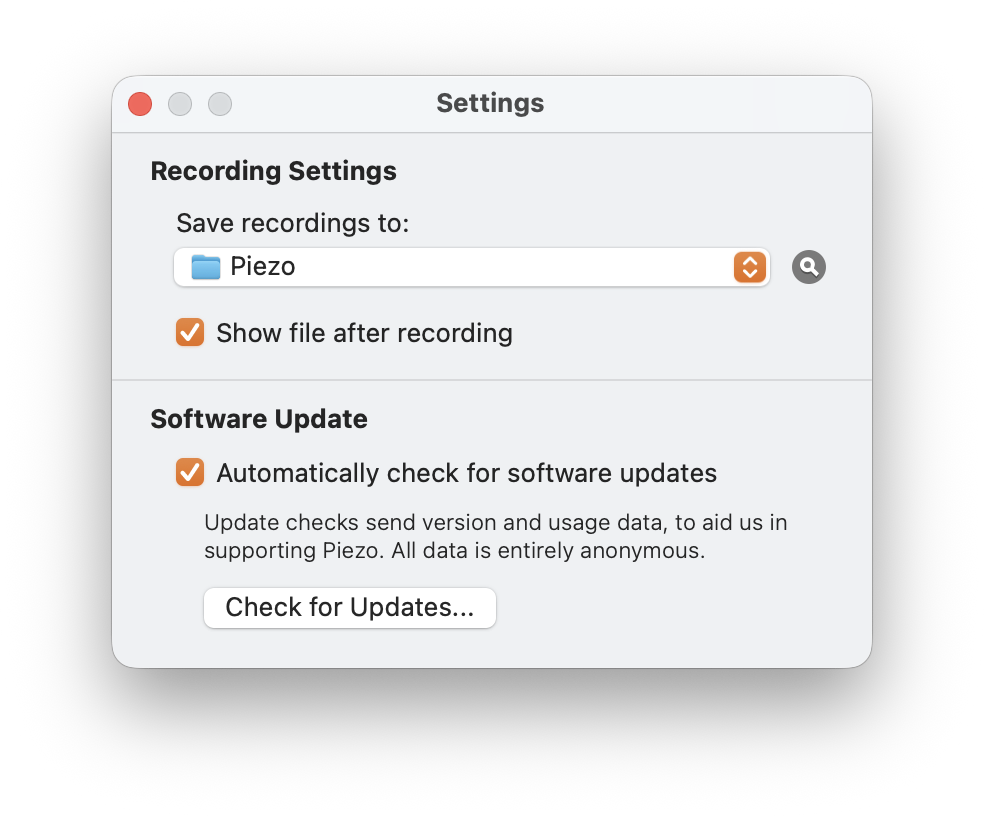
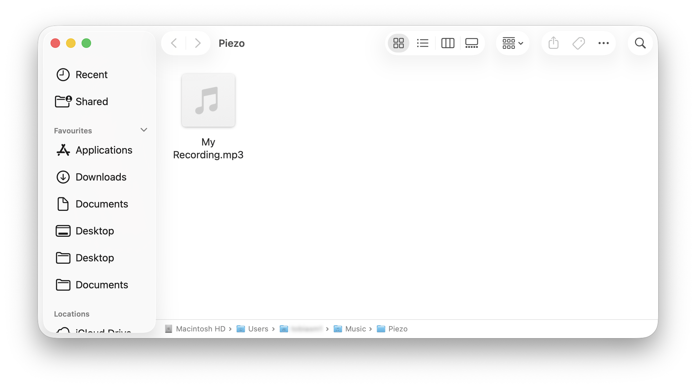

How to import audio
Got some audio you'd like to practice with? Here's how to get it into Learn To Play It.

Learn To Play It works on audio files (mp3, m4a, wav, flac, ogg, aac). If you already have one, just drag it onto the app's main window — done. If you don't, the rest of this page walks you through capturing audio playing on your Mac.
The general idea
You can record any audio playing on your Mac to a file, then open that file in Learn To Play It. Several free and paid Mac apps make this easy. Below we walk through one specific recommendation in detail (Piezo), but any of the alternatives at the bottom will work.
Recommended: Piezo
Piezo from Rogue Amoeba is a single-purpose audio recorder. It's the simplest tool we've found for this job. The free download works for recordings under 10 minutes per session (long enough for any normal track); the paid unlock ($19) removes the limit.
One-time setup
- Download and install Piezo from rogueamoeba.com/piezo. The first launch walks you through approving its audio capture system extension — follow the prompts.
-
Tick "Show file after recording" in Piezo's settings. Open Piezo's settings via the Piezo → Settings… menu (or press ⌘,) and tick the checkbox. By default Piezo doesn't reveal recordings, which makes them annoying to find. With this on, each recording opens its Finder location automatically.

Recording audio
- Pick the source. In Piezo's source dropdown, choose the app that will be playing the audio.
- Hit Record in Piezo, then start the audio playing in the app you're recording from.
-
Hit Stop when the audio finishes. Finder opens showing the recording.

- Drag the file onto Learn To Play It's main window. The app will start separating stems automatically.
That's it. The recording is saved as ~/Music/Piezo/My Recording.mp3 by default (configurable in Piezo's settings). The filename can be changed before recording by clicking the ⚙ settings icon beneath the record button.
Alternatives
Several other tools do the same job. Pick whatever you trust or already use.
- Audio Hijack ($64, also Rogue Amoeba) — more powerful, with audio effects, scheduling, and multi-source mixing. Overkill for this use case, but useful if you do other audio work.
- BlackHole + QuickTime Player (free) — BlackHole is a virtual audio driver. Set up a Multi-Output Device in Audio MIDI Setup that includes BlackHole, route system audio to it, then record in QuickTime Player using BlackHole as the input. More fiddly than Piezo but completely free.
- OBS Studio (free) — open-source screen-recording tool that can capture audio. Heavyweight for this purpose but well-known.
A note on what's allowed
Capture audio you have legitimate access to record. Most streaming services prohibit capturing their content under their terms of service — that's between you and the service, not us. This tool is intended for personal practice and educational use.